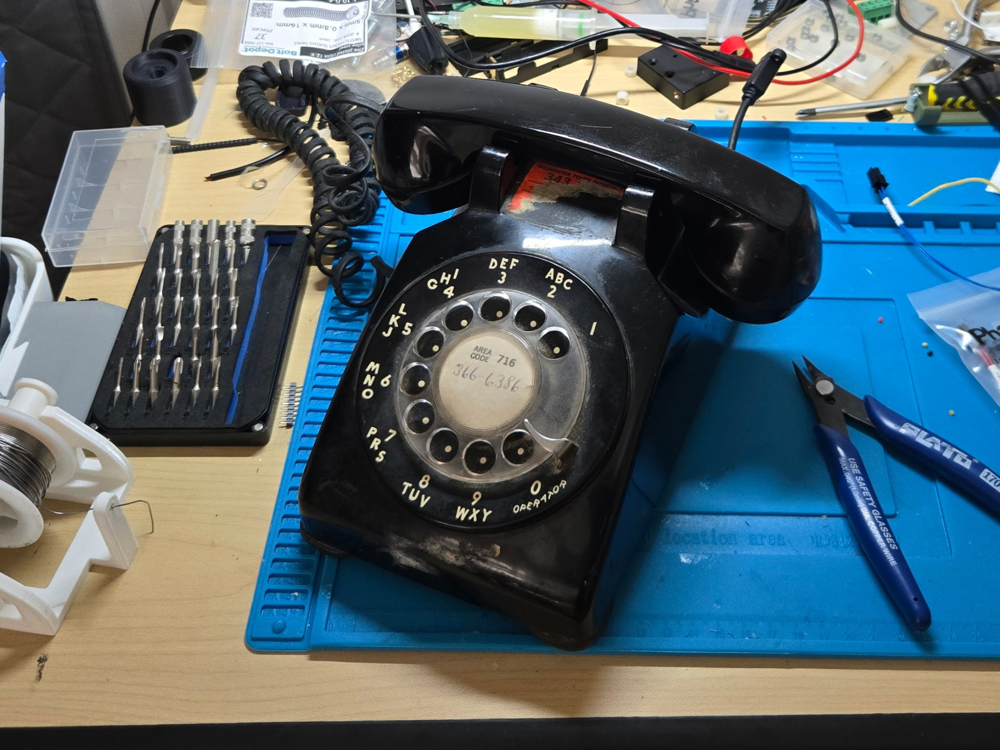
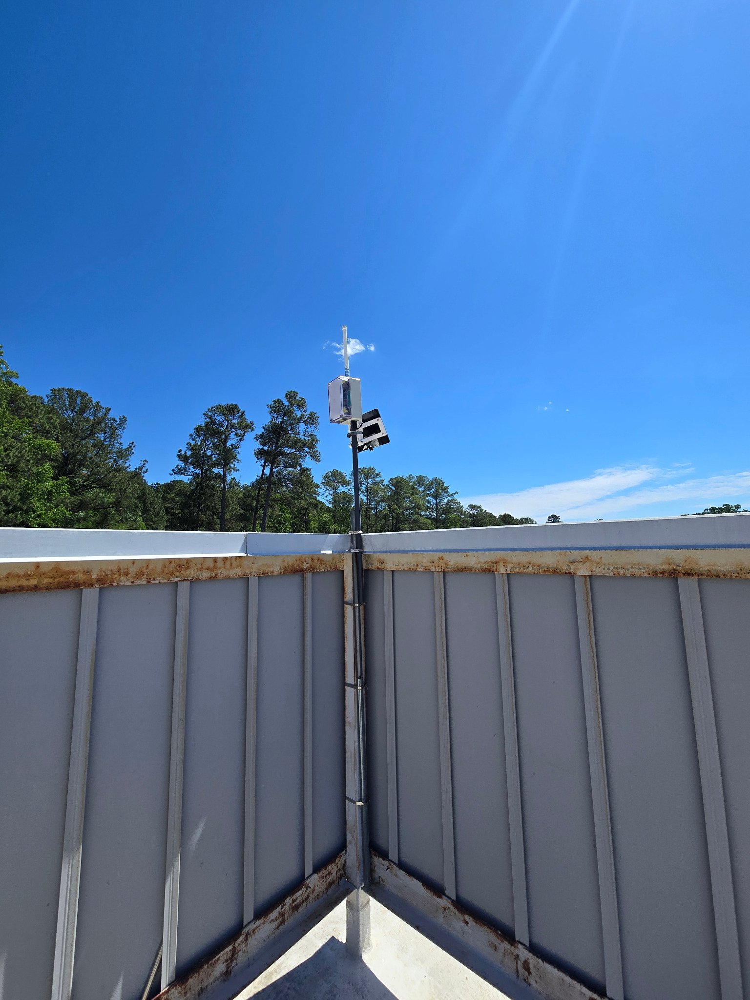
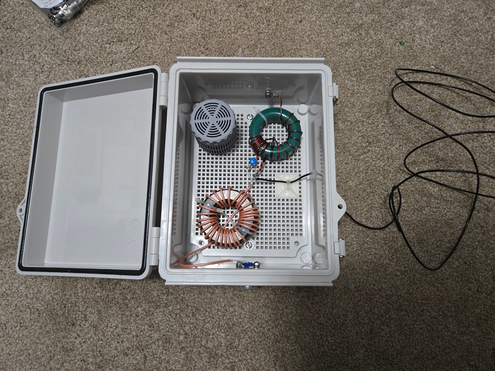
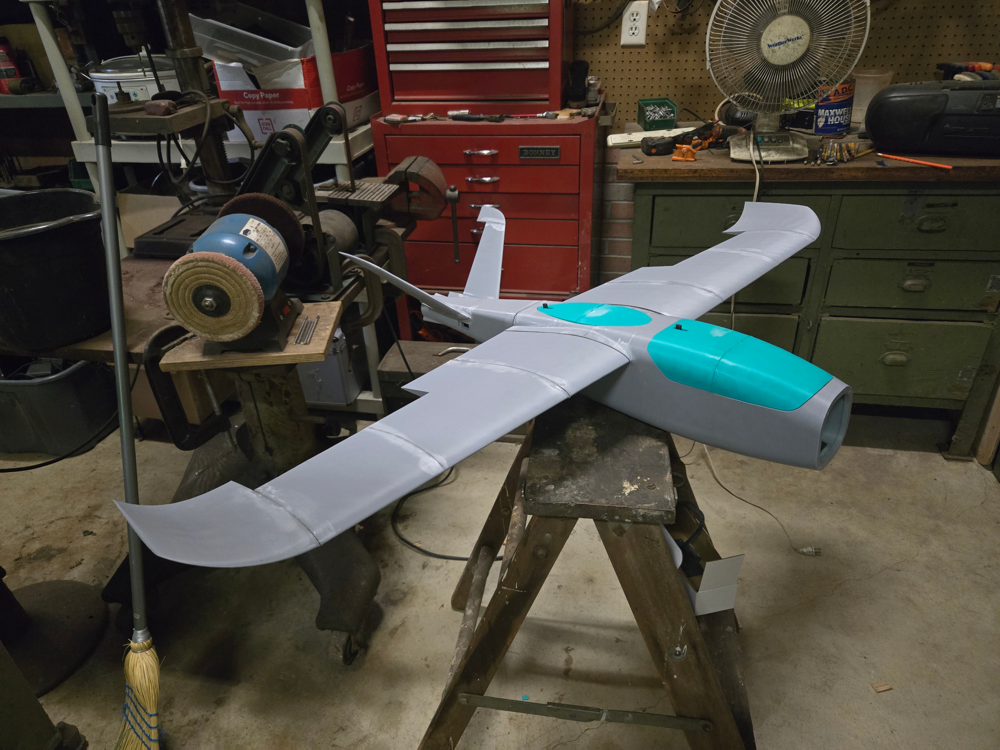
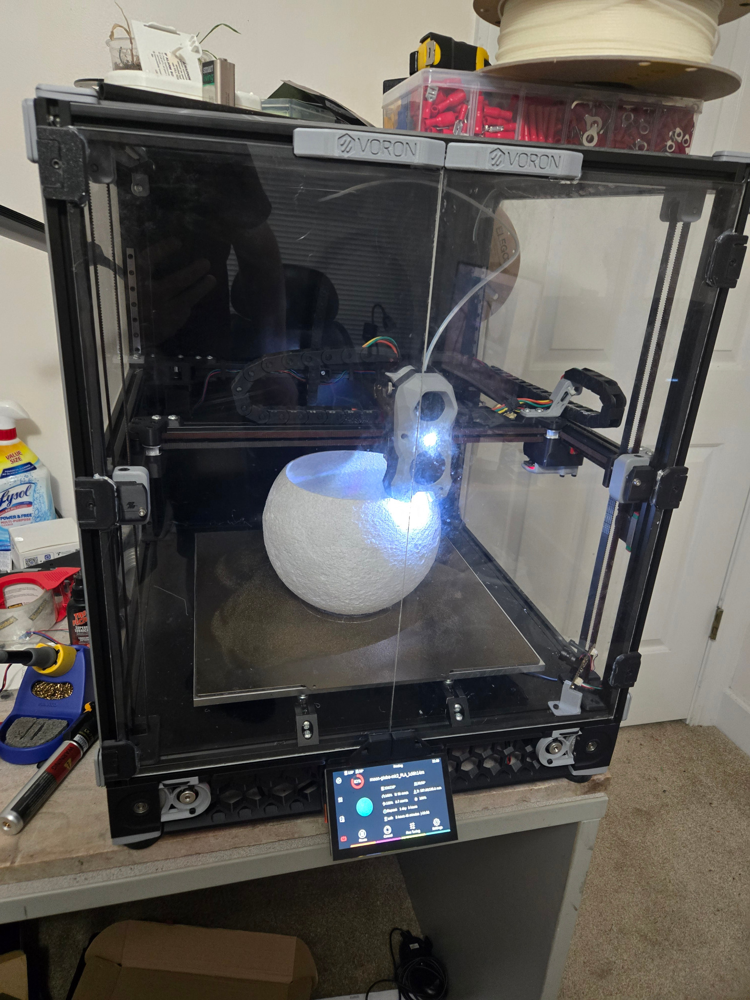

This is a home for the projects that accumulate around a workbench: old equipment given new jobs, radio experiments, small fabrication problems, and software written because the hardware needed it.

{{ site.data.projects.rotarycell.status }}RotaryCell
A Western Electric Model 500 converted into a self-contained cellular telephone while retaining the rotary dial, original handset, and mechanical bell.
The current build places and receives calls and recreates traditional dial, reorder, and receiver-off-hook tones.
- Places and receives cellular calls.
- Uses the original rotary dial and handset.
- Recreates dial, reorder, and receiver-off-hook tones.
- Retains the mechanical bell.
- Uses an ESP32/LilyGO and Silvertel AG1171.
- Two custom PCBs have reached the Gerber stage.
Current: {{ site.data.projects.rotarycell.current }}{% if rotarycell_latest %}Latest update: {{ rotarycell_latest.date | date: "%B %-d, %Y" }}{% else %}No Project Log entries yet.{% endif %}

{{ site.data.projects.meshcore.status }}MeshCore / LoRa
Long-range, low-power mesh networking experiments using portable nodes and solar-powered repeaters.
Current interests include practical coverage, antenna placement, power budgets, mapping, and equipment that can remain unattended.
Current: {{ site.data.projects.meshcore.current }}{% if meshcore_latest %}Latest update: {{ meshcore_latest.date | date: "%B %-d, %Y" }} · {{ meshcore_latest.title }} →{% else %}No Project Log entries yet.{% endif %}

{{ site.data.projects.amateur-radio.status }}Amateur Radio
Station notes, radio projects, repair work, antennas, and experiments under the call sign N1RDU.
This section will collect the useful details that otherwise end up in notebooks, folders, and half-remembered conversations.
Current: {{ site.data.projects.amateur-radio.current }}{% if amateur_radio_latest %}Latest update: {{ amateur_radio_latest.date | date: "%B %-d, %Y" }} · {{ amateur_radio_latest.title }} →{% else %}No Project Log entries yet.{% endif %}

{{ site.data.projects.drones.status }}Drones
Multirotor and fixed-wing aircraft, control systems, repairs, flight testing, and the inevitable collection of spare propellers.
This section will cover individual builds, useful modifications, camera and radio equipment, and lessons learned in the field.
Current: {{ site.data.projects.drones.current }}{% if drones_latest %}Latest update: {{ drones_latest.date | date: "%B %-d, %Y" }} · {{ drones_latest.title }} →{% else %}No Project Log entries yet.{% endif %}

{{ site.data.projects.3d-printing.status }}3D Printing
Functional parts, brackets, enclosures, repair pieces, and prototypes made when the right part either does not exist or takes too long to buy.
Models, printer changes, material notes, and the more useful finished pieces will gradually be collected here.
Current: {{ site.data.projects.3d-printing.current }}{% if printing_latest %}Latest update: {{ printing_latest.date | date: "%B %-d, %Y" }} · {{ printing_latest.title }} →{% else %}No Project Log entries yet.{% endif %}